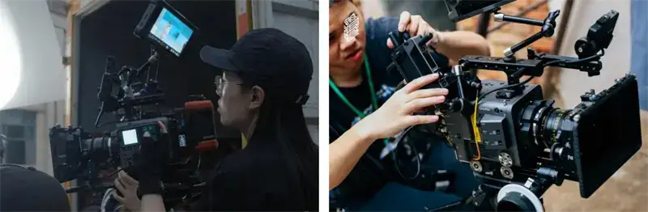
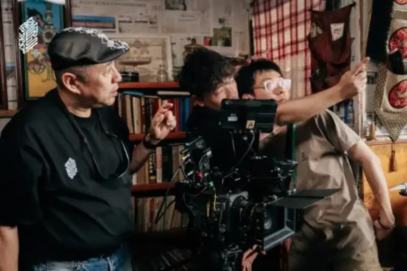
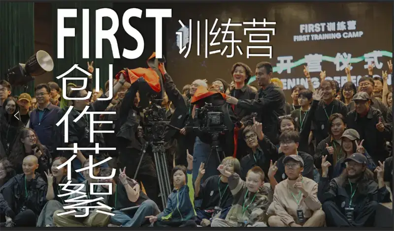
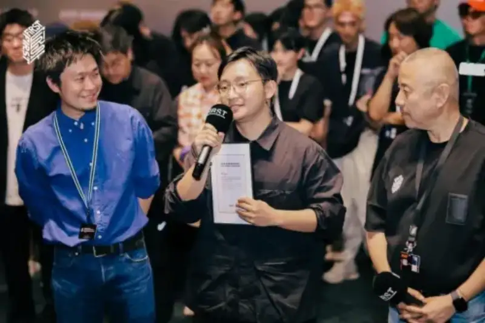
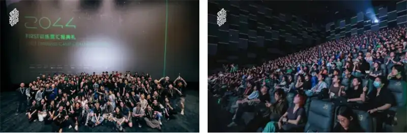
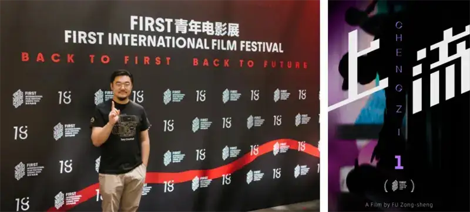
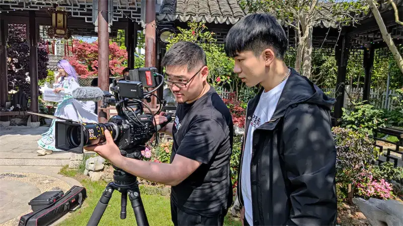
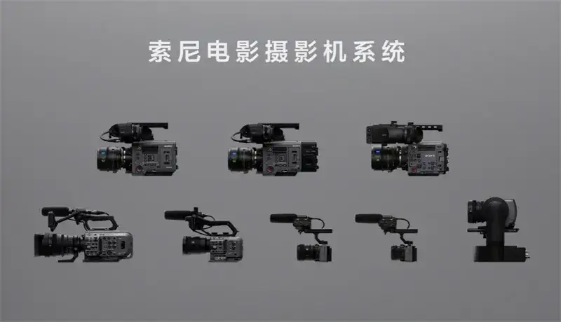

'Film is an interesting technical craft. Only when you understand the technology can you master the language and express yourself freely with joy.' In July, the 18th FIRST Film Festival opened with energy in Xining. As the chief camera equipment partner of this year's FIRST Training Camp, Sony provided the future filmmakers in the camp with its flagship CineAlta cinema cameras, the CineAltaV2 and CineAltaB, G Master lenses, and digital audio microphones. These are a full set of professional filmmaking solutions, widely favored by users in the film and TV industry. With solid imaging technology, Sony helps future filmmakers focus on their work. Chase your dream, and boldly call 'Action,' moving from FIRST to a wider stage.
A training camp contestant chasing a dream and practicing boldly (left); director Fu Zongsheng, who won an award at the 18th FIRST Festival for 'Upscale,' shot on a Sony FX3 (right).
During the ten-day FIRST Training Camp, seven teams of passionate and talented creators faced tight shooting spaces, limited lighting, changing weather, and short production schedules. They threw themselves into the work, and under the strong support of Sony's cinema camera system, their creative vision and intent came through in full. Wang Yu, director of photography for the 'Creation of the Gods' trilogy, served as one of the camp's mentor advisors. On real sets, he patiently and carefully guided the young filmmakers. He shared his valuable experience, hands on, on how to use the strong image quality of Sony cinema cameras to work more efficiently.


The training camp team, working with a Sony cinema camera, and the well-known director of photography Wang Yu on set.
As a pioneer in imaging technology, Sony offers a rich and efficient set of creative shooting systems, from the FX30, a young person's first cinema camera, to the CineAltaB, a new member of the flagship CineAlta series. The creators praised Sony cinema cameras such as the CineAltaV2, CineAltaB, FX3, and FX6. They spoke well of the image quality, the portability, and the smooth post-production workflow. 'We often see these dream cameras in interviews with production teams. Only when you use them yourself do you understand why the big names in mainstream film and TV love Sony.'

Behind the scenes at the 18th FIRST Training Camp.
Li Siwei, director of photography for 'What Is Disco,' used a unique point of view to show emotion across time and space. He stood out from a strong field and won the 'Sony Imaging Innovation Spirit Award' at the 18th FIRST Film Festival Training Camp. He also received a Sony FX30 cinema camera, to encourage him to keep breaking through. Mr. Tan Yonghong, director of Sony (China) for the professional camera product line, and the well-known director of photography Wang Yu, presented the award to Li Siwei at the screening.


The training camp screening and awards ceremony.
Sony keeps working to support and grow the work of future filmmakers in China. At this year's FIRST Film Festival, we were glad to see that 'Upscale,' by independent director Fu Zongsheng and shot on the Sony FX3 and A7S3, was selected for the narrative feature section. It drew a warm response from film fans and the media. Director Fu Zongsheng also won the 'A Certain Point of View' award at the 18th FIRST Youth Film Festival. For nearly ten years, Mr. Fu has kept making independent films. He has worked on many short films, documentaries, and one feature. He uses new ways of shooting to tell new experiences, respond to new questions, and speak to the present with an uncompromising creative voice.

'Upscale,' by Fu Zongsheng and shot on a Sony FX3, was selected for the feature section of the 18th FIRST Film Festival and won the 'A Certain Point of View' award.
When it comes to shooting, Mr. Fu knows every Sony imaging device he has used on his creative journey, from the A6300, FX3, and FX30 to the FX6 cinema camera. He says he has great confidence in the dual native ISO of Sony cinema cameras. When he shoots, he does not have to worry about image quality in low light. The autofocus is also precise and fast, which lets him do, on his own and efficiently, the work that usually needs a three-person team. Otherwise, on 'Upscale,' with a 90,000-word script and more than 90 scenes, an eight-person team could hardly have finished so efficiently and safely in one month.

Fu Zongsheng on the set of 'Upscale.'
'Another great point about Sony cameras is that you can mix different products and your current camera to shoot different projects. Even some independent films can turn out very well. Thanks to the storage efficiency of Sony XAVC S codec, our total footage was only 5TB. This saved a lot of storage and copying time, and let our sound engineer manage the footage efficiently in the evening. On set, good gear really is solid productivity.'
On set, good gear is productivity.
Filmmakers must think about artistic expression, and also manage the production flow and the budget well. This year, Mr. Hao Dapeng brought his new project 'Dried Shrimp' to Xining. Mr. Hao is a writer and director, and also a member of the Photography and Camera Committee of the China Society of Film and Television Technology. His film 'Dried Shrimp,' now in preparation, was selected as a final project of the 18th FIRST Film Festival.
Hao Dapeng and the poster for his film 'Dried Shrimp,' now in preparation.
'Right now the Sony FX3 and FX30 have a high market adoption, and their performance basically meets the standard for the big screen. They are also not expensive, which suits young, low-budget teams best.' In the discussion, Mr. Hao noted: 'Lowering the barrier to creation, cutting production cost, and presenting a full filmmaking workflow, this is the great advantage Sony cameras bring to shooting, in terms of gear. Leave the technology to Sony, chase your dream, and film is within reach.'
Sony spans film, music, games, and digital technology. This cross-field experience helps Sony understand how to use technology to meet the needs of creators. Sony's professional imaging solutions raise the efficiency of film and TV production and smooth the production flow. Well-known films such as 'Article 20,' 'Cliff Walkers,' 'Avatar,' and 'Mission: Impossible 7' were all shot on Sony cinema cameras. Sony will keep supporting the growth of future filmmakers, use innovative imaging technology to spark endless ideas, and help them chase their film dreams, moving from FIRST to a wider stage.
About the Sony Cinema Camera System

The Sony Cinema Camera System
Sony keeps using innovative technology to faithfully recreate the creator's intent. With broad experience in film and TV production, Sony offers a rich and efficient creative shooting system to meet the many needs of high-quality filmmaking. The Sony cinema camera system centers on the CineAlta series. It includes the digital cinema cameras widely praised in the industry: the CineAltaV, the CineAltaV 2, and the CineAltaB. It also includes the full-frame cinema camera FX9, popular in documentary and TV drama work; the full-frame PTZ camera FR7; the FX6 for flexible work; the light and portable FX3; and the FX30, a young person's first cinema camera. The CineAltaB is made for diverse film and TV work. It broadens the Sony cinema camera system and gives film and TV creation more room to imagine. Sony also offers Crystal LED screens, which give high contrast and rich color, and a virtual production tool set. These improve the production flow and help film and TV creators work with more freedom.